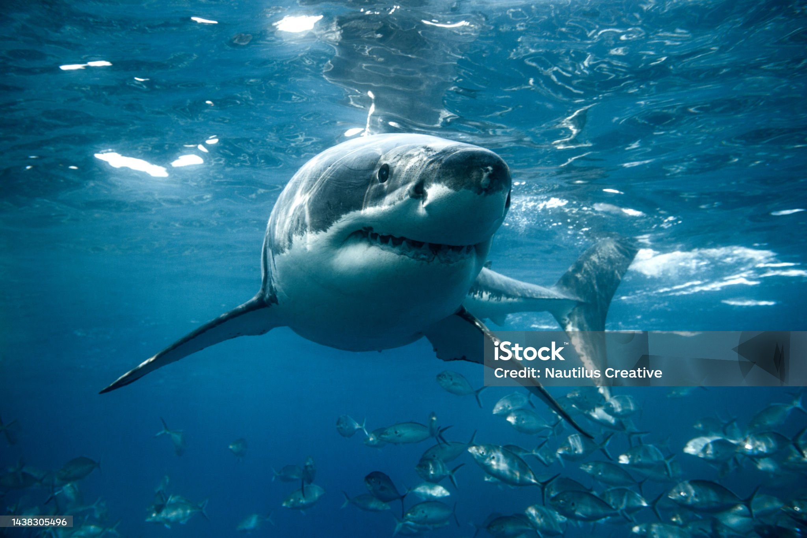

Los tiburones son seres mitológicos e inquietantes, peces extraordinarios de nadar sigiloso y muy antiguos. Han sobrevivido millones de años, incluso a los dinosaurios. Y ahora, el ser humano está siendo responsable de su desaparición en unos pocos siglos. Las poblaciones mundiales de tiburones y rayas de alta mar han disminuido un 71% desde la década de 1970. ¡Actualmente el 36% de las 1 200 especies de tiburones y rayas están en riesgo de extinción! Se calcula que cada año mueren 100 millones de tiburones y rayas a causa de la sobrepesca y las capturas accidentales en todo el mundo.
estas son algunas especies
-

Tiburon blanco
El tiburón blanco o gran tiburón blanco es la especie de peces más grande y feroz de todos depredadores marinos. Su nombre científico es Carcharodon carcharias.